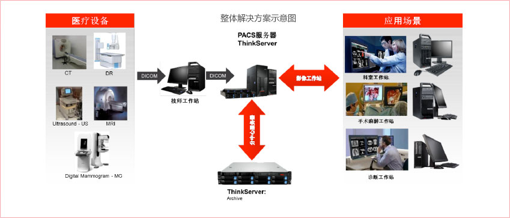

联想医院PACS架构整体解决方案
PACS系统简介
PACS（Picture Archiving and Comuniations System）即图像存储与传输系统，是应用于医院的数字医疗设备如CT、MR（核磁共振）、US（超声成像）、X光机、DSA（数字减影）、CR（计算机成像）等设备所产生的数字化医学图像信息的采集、存储、管理、诊断、信息 处理的综合应用系统。
联想针对PACS系统基础架构解决方案
本方案针对医疗影像系统严格的性能要求，在系统基础架构，大容量数据处理系统，存储系统等方面结合各地区和医院的业务特性，为用户提供区域级、全院级和科室级三种PACS解决方案。同时，鉴于PACS方案对存储系统的特殊需要，我们建议将各种存储介质在各个层次上组合起来，共同解决用户的复杂需求，并应用数据生命周期管理加强在PACS系统的效率和效益。
不同规模的PACS系统基础架构解决方案
I. 集团医院PACS解决方案
该方案目标是将集团内医院联成一网，实现医院之间的影像传输与会诊，解决病人重复检查、重复交费问题，整合区域医疗资料的合理分配与利用。
方案优势：
采用联想万全R680G7企业级服务器和联想光纤磁盘阵列构建的联想NS（Non Stop永不停顿）数据库集群系统，具有并行处理、负载均衡和故障自动切换的强大特性，而且可以根据性能的要求动态扩展集群节点的数量最大至64个节点。联想NS高性能集群系统自1999年推出后引起用户广泛关注，并且是国内唯一一家通过美国Oracle公司OASB认证的集群解决方案，其具有的高性价比，使得过去只有小型机才能承担的应用在IA架构服务器上得以实现，从而更进一步降低了用户的总拥有成本（比小型机节省约一半成本）。
联想NS高性能数据库集群系统在中国电子信息产业发展研究院和中国信息化推进联盟主办的2006中国IT用户年会上荣获“2006年集群系统优秀解决方案奖”。
方案配置：
- 中心NS数据库集群采用联想万全R680G7服务器 2台。
- 中心应用服务器采用联想ThinkServer RD640服务器4台。
- 联想-Brocade 24口SAN光纤交换机 2台。
- 在线集中存储采用LENOVO-EMC VNX 5400光纤磁盘阵列（SAS磁盘30TB以上） 1台。
- 归档存储采用LENOVO-EMC VNX 5100光纤磁盘阵列（SATA磁盘80TB以上） 1台。
II. 全院级PACS解决方案
该方案是针对三甲级以上或大医院的全院级PACS解决方案，将放射科、超声科、内窥镜、病理等影像科室接入PACS系统，并通过PACS与HIS融合，实现全院影像采集、存储、传输、诊断数字化。
方案优势：
LENOVO-EMC VNX5200光纤磁盘阵列应用了更多源自高端企业级存储系统的技术，提供持续的最强数据处理能力。
方案配置：
- 中心数据库双机采用联想万全R680G7服务器 2台。
- 前置服务器采用联想ThinkServer RD640服务器4台。
- 联想-Brocade 24口SAN光纤交换机 2台。
- 在线集中存储采用LENOVO-EMC VNX 5200光纤磁盘阵列（SAS磁盘15TB以上） 1台。
- 归档存储采用LENOVO-EMC VNX 5100光纤磁盘阵列（SATA磁盘40TB以上） 1台。
- 备份存储采用LENOVO-Quantum i40带库 1台。
III. 科室级PACS解决方案
该方案目标是实现科室（放射、超声、内窥镜、病理科）内部影像采集、存储、传输、管理数字化，提高医院工作效率和诊疗水平。下面以放射科PACS系统为例说明。
方案优势：
联想ThinkServer RD640是2U企业级服务器的旗舰产品，集合业界最新技术成果。联想ThinkServer RD640采用全冗余设计提升系统可用性，出色的节能设计提高产品能效，提供更智能的远程监控管理。ThinkServer RD640采用了高规格的设计，支持双路英特尔®至强® E5-26xx v2系列处理器，最大支持20个及以上DIMM内存插槽，最大支持16块2.5寸硬盘，集成高性能Intel双千兆网卡，另有独立的远程管理网口；在安全方面，ThinkServer RD640集成了符合国家标准的可信计算密码模块TCM安全芯片；其高规格、高效能、高可靠、高安全的出色表现，为关键应用提供了坚实的保障。
方案配置：
- 科室PACS服务器采用联想ThinkServer RD640服务器 2台。
- 在线集中存储采用联想SureSAS112磁盘阵列（5TB以上） 1台。
特色产品
PACS系统基础架构主要组成部分
- 服务器系统
服务器包括HIS服务器、PACS服务器、RIS服务器、WEB服务器、数据库服务器、通信服务器、前置服务器和备份归档管理服务器等，针对不同级别PACS系统需求，联想可以提供通用的机架式服务器和塔式服务器，也可以提供高密度服务器和刀片服务器等。
- PACS存储系统
存储系统包括数据库存储系统、影像文件在线存储系统、近线存储系统、归档和备份存储系统等，针对不同的存储需求，联想可以提供FC-SAN高端存储、IP-SAN近线存储、NAS存储、虚拟带库归档存储和物理磁带库备份存储方案等。
- PACS存储区域网络
PACS存储网络主要包括高性能的光纤通道存储网络和通用以太网存储网络两种，联想可以提相应配置规格的光纤通道交换机和以太网交换机。
- 基础架构软件和解决方案
PACS系统基础架构软件和解决方案需求包括服务器高可用性部署、数据库集群部署、应用服务器负载均衡部署、服务器虚拟化部署、数据集中备份和容灾解决方案、服务器集中远程管理解决方案等；针对以上需求联想可以提供SureHA高可用方案、NS数据库集群方案、应用服务器负载均衡方案、服务器虚拟化部署方案、服务器集中远程管理平台、数据归档和备份方案，已经基于存储系统的远程异地容灾解决方案等等。
联想技师工作站解决方案
客户需求：
- 安全、稳定、处理速度快。
- 扩展性强，可支持多屏显示。
- 显示专业性，可配合医用竖屏实现最好的图像效果。
使用场景：
- PACS分中心工作站。
- 诊断工作站，需要连接专业显示器实现多屏显示。
- 高端PC应用环境。（如报告工作站、三维重建工作站等）
